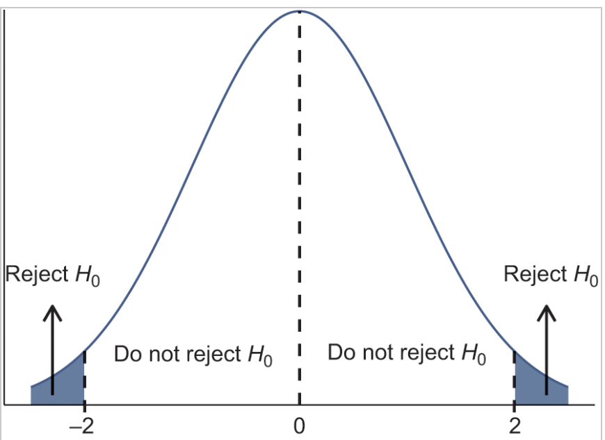

Lecturer in AI and Machine Learning for Sustainable Construction
Published
February 6, 2025
Today, we’ll discuss the use of statistics to make decisions – in particular, decisions about whether a particular hypothesis is supported by the data. There are three major goals of statistics:
Describe
Decide
Predict
We’ll cover:
Statistical inference - Using a sample to generalize (or infer) about the population.
Sampling distributions and standard error - What does it actually mean to analyse a sample?
Confidence interval - How certain are we about our estimate?
Hypothesis Testing - How do we use data to answer a hypothesis and make a decision?
Learning Objectives
Understand point estimation
Apply and interpret the Central Limit Theorem
Construct and interpret confidence intervals for means
Understand the behaviour of confidence intervals
Carry out hypothesis tests for means (t-test)
Understand the probabilities of error in hypypothesis tests
If you want to figure out the distribution of the change people carry in their pockets, and your sample is large enough, you will find that the distribution follows certain patterns.
Statistical Inference
Adapted from:
Significant Statistics, Chapter 6 - Foundations of Inference. John Morgan Russell (2020).
Statistical Thinking, Chapter 9 - Hypothesis Testing. Russell A. Poldrack (2019).
It is often necessary to “guess”, infer, or generalize about the outcome of an event in order to make a decision. Politicians study polls to guess their likelihood of winning an election. Teachers choose a particular course of study based on what they think students can comprehend. Doctors choose the treatments needed for various diseases based on their assessment of likely results. You may have visited a casino where people play games chosen because of the belief that the likelihood of winning is good. You may have chosen your course of study based on the probable availability of jobs.
Statistical Inference
The goal of statistical inference is to generalise - to make statements about a population based on a sample.
Statistical inference uses what we know about probability to make our best “guesses” from samples about what we don’t know about the population.
Statistical Inference
Main forms of statistical inference
Point estimation
Using sample data to calculate a single statistic as an estimate of an unknown population parameter
Example: What is the average height of undergraduates at this university? What is the average construction cost of an office building in London? What was it in 2019?
Confidence intervals
An interval built around a point estimate for an unknown population parameter.
Hypothesis testing
A decision making procedure for determining whether sample evidence supports a hypothesis.
These three examples make up the main forms of statistical inference. However, there are many other forms of statistical inference, such as regression analysis - e.g. How much does building energy use change as occupancy increases?
Point Estimation
Suppose you were trying to determine the mean rent of a two-bedroom apartment in your town. You might look in the classified section of the newspaper, write down several rents listed, and average them together. You would have obtained a point estimate of the true mean. If you are trying to determine the percentage of times you make a basket when shooting a basketball, you might count the number of shots you make and divide that by the number of shots you attempted. In this case, you would have obtained a point estimate for the true proportion.
The most natural way to estimate features of the population (parameters) is to use the corresponding summary statistic calculated from the sample. Some common point estimates and their corresponding parameters are found in the following table:
Parameters and Point Estimates
Parameter
Measure
Statistic
\(\mu\)
Mean of a single population
\(\bar{x}\)
\(p\)
Proportion of a single population
\(\hat{p}\)
\(\mu_D\)
Mean difference of two dependent populations
\(\bar{x}_D\)
\(\mu_1 - \mu_2\)
Difference in means of two independent populations
\(\bar{x}_1 - \bar{x}_2\)
\(p_1 - p_2\)
Difference in proportions of two population
\(\hat{p}_1 - \hat{p}_2\)
\(\sigma^2\)
Variance of a single population
\(S^2\)
\(\sigma\)
Standard deviation of a single population
\(S\)
Point Estimation
Parameters and Point Estimates
Parameter
Statistic
\(\mu\)
\(\bar{x}\)
\(p\)
\(\hat{p}\)
\(\mu_1 - \mu_2\)
\(\bar{x}_1 - \bar{x}_2\)
\(p_1 - p_2\)
\(\hat{p}_1 - \hat{p}_2\)
\(\sigma^2\)
\(S^2\)
\(\sigma\)
\(S\)
Suppose the mean weight of a sample of 60 adults is 173.3 lbs; this sample mean is a point estimate of the population mean weight, \(\mu\).
Remember: this is one of many samples that we could have taken from the population.
If a different random sample of 60 individuals were taken from the same population, the new sample mean would likely be different as a result of sampling variability. While estimates generally vary from one sample to another, the population mean is a fixed value.
Suppose a poll suggested the US President’s approval rating is 45%. We would consider 45% to be a point estimate of the approval rating we might see if we collected responses from the entire population. This entire-population response proportion is generally referred to as the parameter of interest. When the parameter is a proportion, it is often denoted by p, and we often refer to the sample proportion as \(\hat{p}\) (pronounced “p-hat”). Unless we collect responses from every individual in the population, p remains unknown, and we use $ as our estimate of p.
How would one estimate the difference in average weight between men and women? Suppose a sample of men yields a mean of 185.1 lbs and a sample of women men yields a mean of 162.3 lbs. What is a good point estimate for the difference in these two population means? We will expand on this in following chapters.
Unbiased Estimation
Sampling variability
We have established that different samples yield different statistics due to sampling variability. These statistics have their own distributions, called sampling distributions, that reflect this as a random variable. The sampling distribution of a sample statistic is the distribution of the point estimates based on samples of a fixed size, n, from a certain population. It is useful to think of a particular point estimate as being drawn from a sampling distribution.
Recall the sample mean weight calculated from a previous sample of 173.3 lbs. Suppose another random sample of 60 participants might produce a different value of x, such as 169.5 lbs. Repeated random sampling could result in additional different values, perhaps 172.1 lbs, 168.5 lbs, and so on. Each sample mean can be thought of as a single observation from a random variable X. The distribution of X is called the sampling distribution of the sample mean, and has its own mean and standard deviation like the random variables discussed previously. We will simulate the concept of a sampling distribution using technology to repeatedly sample, calculate statistics, and graph them. However, the actual sampling distribution would only be attainable if we could theoretically take an infinite amount of samples.
Each of the point estimates in the table above have their own unique sampling distributions which we will look at in the future
What makes a statistical estimate of this parameter of interest a “Good” one? It must be both accurate and precise.
Although variability in samples is present, there remains a fixed value for any population parameter.
According to the law of large numbers, probabilities converge to what we expect over time.
Point estimates follow this rule, becoming more accurate with increasing sample size.
Example Dataset - NHANES
National Health and Nutrition Examination Survey (NHANES) from the US Centers for Disease Control (CDC)
The accuracy of an estimate refers to how well it estimates the actual value of that parameter. Mathematically, this is true when that the expected value your statistic is equal to the value of that parameter. This can be visualized as the center of the sampling distribution appearing to be situated at the value of that parameter.
According to the law of large numbers, probabilities converge to what we expect over time. Point estimates follow this rule, becoming more accurate with increasing sample size. The figure above shows the sample mean weight calculated for random samples drawn, where sample size increases by 1 for each draw until sample size equals 500. The maroon dashed horizontal line is drawn at the average weight of all adults 169.7 lbs, which represents the population mean weight according to the CDC.
The figure above shows the sample mean weight calculated for random samples drawn, where sample size increases by 1 for each draw until sample size equals 500. The maroon dashed horizontal line is drawn at the average weight of all adults 169.7 lbs, which represents the population mean weight according to the CDC.
Note how a sample size around 50 may produce a sample mean that is as much as 10 lbs higher or lower than the population mean. As sample size increases, the fluctuations around the population mean decrease; in other words, as sample size increases, the sample mean becomes less variable and provides a more reliable estimate of the population mean.
In addition to accuracy, a precise estimate is also more useful. This means when repeatedly sampling, the values of the statistics seem pretty close together. The precision of an estimate can be visualized as the spread of the sampling distribution, usually quantified by the standard deviation. The phrase “the standard deviation of a sampling distribution” is often shortened to the standard error. A smaller standard error means a more precise estimate and is also effected by sample size.
Sampling Distribution of the Mean
Connecting sampling distributions with Standard Error, Confidence Intervals, and Hypothesis Testing
Central Limit Theorem
The central limit theorem (CLT) is one of the most powerful and useful ideas in all of statistics. There are two alternative forms of the theorem, and both alternatives are concerned with drawing finite samples size n from a population with a known mean, \(\mu\), and a known standard deviation, \(\sigma\). The first alternative says that if we collect samples of size n with a “large enough n,” then the resulting distribution can be approximated by the normal distribution.
Applying the law of large numbers here, we could say that if you take larger and larger samples from a population, then the mean {x} of the sample tends to get closer and closer to \(\mu\). From the central limit theorem, we know that as n gets larger and larger, the sample means follow a normal distribution. The larger n gets, the smaller the standard deviation gets. (Remember that the standard deviation for {x} is .) This means that the sample mean {x} must be close to the population mean \(\mu\). We can say that \(\mu\) is the value that the sample means approach as n gets larger. The central limit theorem illustrates the law of large numbers.
The size of the sample, n, that is required in order to be “large enough” depends on the original population from which the samples are drawn (the sample size should be at least 30 or the data should come from a normal distribution). If the original population is far from normal, then more observations are needed for the sample means or sums to be normal. Sampling is done with replacement.
The CLT means says that if you keep drawing larger and larger samples and calculating their means, the sample means form their own normal distribution (the sampling distribution).
The sampling distribution of the mean is generated by repeated sampling from the same population and recording the sample mean per sample. This forms a distribution of different means, and this distribution has its own mean and variance.
The normal distribution has the same mean as the original distribution and a variance that equals the original variance divided by the sample size.
Drawing samples of people’s weight from the NHANES dataset.
We have established that different samples yield different statistics due to sampling variability . These statistics have their own distributions, called sampling distributions, that reflect this as a random variable. The sampling distribution of a sample statistic is the distribution of the point estimates based on samples of a fixed size, n, from a certain population. It is useful to think of a particular point estimate as being drawn from a sampling distribution.
Recall the sample mean weight calculated from a previous sample of 173.3 lbs. Suppose another random sample of 60 participants might produce a different value of x, such as 169.5 lbs. Repeated random sampling could result in additional different values, perhaps 172.1 lbs, 168.5 lbs, and so on. Each sample mean can be thought of as a single observation from a random variable X. The distribution of X is called the sampling distribution of the sample mean, and has its own mean and standard deviation like the random variables discussed previously. We will simulate the concept of a sampling distribution using technology to repeatedly sample, calculate statistics, and graph them. However, the actual sampling distribution would only be attainable if we could theoretically take an infinite amount of samples.
Each of the point estimates in the table above have their own unique sampling distributions which we will look at in the future
We are drawing a random sample of people from the dataset and calculating the mean weight for that sample. Sample size is the number of data points we pull. We then repeat this 5000 times (n_samples) to build up the sampling distribution.
Standard Error
A sampling distribution is what we get by simulating multiple samples (of sample size \(n\)) from a population.
Recall: The Standard Error is the standard deviation of the sampling distribution.
\[
SEM = \sigma_{\bar{x}\ (means)}
\]
Standard Error
A sampling distribution is a probability distribution of a statistic at a given sample size.
Recall: The Standard Error is the standard deviation of the sampling distribution. This is also equal to the standard deviation \(\sigma\) of the population divided by the square root of the sample size.
\[
SEM = \sigma_{\bar{x}\ (means)} = \frac{\sigma}{\sqrt{n}} \approx \frac{\sigma_{x}}{\sqrt{n}} \left[ i.e. \frac{\text{Est. Std Dev of the sample}}{\sqrt{\text{Sample size}}} \right]
\]
In other words:
If you draw random samples of size \(n\), the distribution of the random variable \(\bar{X}\), which consists of sample means, is called the sampling distribution of the sample mean. The sampling distribution of the mean approaches a normal distribution as \(n\), the sample size, increases.
In the SEM formula, remember the sampling distribution is the distribution of multiple means - not the distribution of our sample.
Quote from https://pressbooks.lib.vt.edu/introstatistics/chapter/the-central-limit-theorem-for-sample-means-averages/
Standard Error
Key Takeaways
A sampling distribution is what we get by simulating multiple samples from a population.
The Standard Error is the standard deviation \(\sigma_{\bar{x}}\) of the sampling distribution.
The SE decreases as the sample size \(n\) increases.
Because of this relationship - we can estimate the SE from a single sample \(\frac{\sigma_x}{\sqrt{n}}\)
\[
SEM = \sigma_{\bar{x}\ (means)} = \frac{\sigma}{\sqrt{n}} \approx \frac{\sigma_{x}}{\sqrt{n}} \left[ i.e. \frac{\text{Est. Std Dev of the sample}}{\sqrt{\text{Sample size}}} \right]
\]
The “AI-Powered Job Market Insights” dataset provides a snapshot of the modern job market, particularly focusing on the role of artificial intelligence (AI) and automation across various industries.
This dataset includes 500 unique job listings, each characterized by different factors like industry, company size, AI adoption level, automation risk, required skills, and job growth projections.
Example Values: “Data Scientist”, “Software Engineer”, “HR Manager”
Industry:
Description: The industry in which the job is located.
Type: Categorical
Example Values: “Technology”, “Healthcare”, “Finance”
Company_Size:
Description: The size of the company offering the job.
Type: Ordinal
Categories: “Small”, “Medium”, “Large”
Location:
Description: The geographic location of the job.
Type: Categorical
Example Values: “New York”, “San Francisco”, “London”
AI_Adoption_Level:
Description: The extent to which the company has adopted AI in its operations.
Type: Ordinal
Categories: “Low”, “Medium”, “High”
Automation_Risk:
Description: The estimated risk that the job could be automated within the next 10 years.
Type: Ordinal
Categories: “Low”, “Medium”, “High”
Required_Skills:
Description: The key skills required for the job role.
Type: Categorical
Example Values: “Python”, “Data Analysis”, “Project Management”
Salary_USD:
Description: The annual salary offered for the job in USD.
Type: Numerical
Value Range: $30,000 - $200,000
Remote_Friendly:
Description: Indicates whether the job can be performed remotely.
Type: Categorical
Categories: “Yes”, “No”
Job_Growth_Projection:
Description: The projected growth or decline of the job role over the next five years.
Type: Categorical
Categories: “Decline”, “Stable”, “Growth”
Exercise - Mystery bags
To begin, split into three groups. Decide on the following roles, one per person:
Sampler - draws samples from the population
Recording - records the draws in R
Your group has been presented with a population model (bag containing salaries). There may be multiple populations represented in the various bags around the room.
Please DO NOT look in the bag OR empty the contents of the bag.
Exercise - Mystery bags {nonincremental}
The task
The Sampler draws 10 slips from the bag - this is your sample of size 5.
The Recorder records the values on the slips into the sampling-exercise.R file.
Create a new list for each sample (sample_1 <- c(1, 2, 3, 2, 2))
Calculate the mean for the new sample and add it to the sample_means table.
Run the code to plot the histogram of your samples.
Return the slips to the bag.
Ensure the data is well mixed between samples.
Repeat
Statistical Inference
Statistical Inference
Using a sample to generalize (or infer) about the population.
We know how to make a point estimate of a population - what else do we need in order to make a decision?
How confident are we that our estimate can generalize to the rest of the population?
We need to determine the uncertainty in our estimate
We use inferential statistics to make generalizations about an unknown population. The simplest way of doing this is to use the sample data help us to make a point estimate of a population parameter. We realize that due to sampling variability the point estimate is most likely not the exact value of the population parameter, but should be close to it. After calculating point estimates, we can build off of them to construct interval estimates, called confidence intervals.
Confidence Intervals
A confidence interval is another type of estimate, but instead of being just one number, it is an interval of numbers
Provides a range a range of reasonable values where we expect the true population parameter to fall.
Point estimate (statistic) has some variability and uncertainty since we estimate it based on a sample.
We want to quantify and communicate this uncertainty.
There is no guarantee that a given confidence interval does capture the parameter, but there is a predictable probability of success. It is important to keep in mind that the confidence interval itself is a random variable, while the population parameter is fixed.
Business Example
Average streams per month
You work in the marketing department of a music company. You want to know the mean number of songs a consumer streams per month.
You conduct a survey of 100 customers and calculate the sample mean (\(\bar{x}\)) and use it as the point estimate for the population mean (\(\mu\))
Suppose we know that the standard deviation \(\sigma = 100\).
Following the Central Limit Theorem, the Standard Error is:
If you worked in the marketing department of an entertainment company, you might be interested in the mean number of songs a consumer downloads a month from iTunes. If so, you could conduct a survey and calculate the sample mean, \(\bar{x}\). You would use \(\bar{x}\) to estimate the population mean. The sample mean, \(\bar{x}\), is the point estimate for the population mean, μ.
Suppose, for the iTunes example, we do not know the population mean μ, but we do know that the population standard deviation is \(\sigma = 100\) and our sample size is 100. Then, by the central limit theorem, the standard deviation for the sample mean is \(\frac{\sigma }{\sqrt{n}}=\frac{100}{\sqrt{100}}=10\).
What is the probability of sampling a certain mean value?
The Empirical Rule says that in approximately 95% of the samples, the sample mean, \(\bar{x}\), will be within two standard deviations of the population mean\(\mu\) .
For our example, two standard deviations is \((2)(10) = 20\). The sample mean \(\bar{x}\) is likely to be within 20 units of \(\mu\).
Because \(\bar{x}\) is within 20 units of \(\mu\), which is unknown, then \(\mu\) is likely to be within 20 units of \(\bar{x}\)in 95% of the samples.
Because \(\bar{x}\) is within 0.2 units of μ, which is unknown, then μ is likely to be within 0.2 units of \(\bar{x}\) in 95% of the samples. The population mean μ is contained in an interval whose lower number is calculated by taking the sample mean and subtracting two standard deviations (2)(0.1) and whose upper number is calculated by taking the sample mean and adding two standard deviations. In other words, μ is between \(\bar{x}\text{ }-\text{ 0}\text{.2}\) and \(\bar{x}\text{ }+\text{ 0}\text{.2}\) in 95% of all the samples.
Calculate the Confidence Interval
We want to calculate the range of values which the true mean is likely to fall within 95% of the time, given our sample.
For the streaming example, suppose that a sample produced a sample mean \(\bar{x} = 200\). Then the unknown population mean \(\mu\) is between \(\bar{x}-20=200-20=180\) and \(\bar{x}+20=200+20=220\) songs per month.
We can say that we are about 95% confident that the unknown population mean number of songs streamed per month is between 180 and 220. The approximate 95% confidence interval is (1.8, 2.2).
Based on our sample, we can say two things. Either:
The interval (180, 220) contains the true mean \(\mu\), or…
Our sample prodcued an \(\bar{x}\) that is not within 20 units of the true mean \(\mu\). This would only happen for 5% of the samples.
We can say that we are about 95% confident that the unknown population mean number of songs downloaded from iTunes per month is between 1.8 and 2.2. The approximate 95% confidence interval is (1.8, 2.2). This approximate 95% confidence interval implies two possibilities. Either the interval (1.8, 2.2) contains the true mean μ or our sample produced an that is not within 0.2 units of the true mean μ. The second possibility happens for only 5% of all the samples (95–100%).
Remember that a confidence intervals are created for an unknown population parameter. Confidence intervals for most parameters have the form: (Point Estimate ± Margin of Error) = (Point Estimate – Margin of Error, Point Estimate + Margin of Error) The margin of error (MoE) depends on the confidence level or percentage of confidence and the standard error of the mean. When you read newspapers and journals, some reports will use the phrase “margin of error.” Other reports will not use that phrase, but include a confidence interval as the point estimate plus or minus the margin of error. These are two ways of expressing the same concept. A confidence interval for a population mean with a known standard deviation is based on the fact that the sample means follow an approximately normal distribution. Suppose that our sample has a mean of and we have constructed the 90% confidence interval (5, 15) where MoE = 5.
Communicating Confidence Intervals
The interpretation should clearly state the confidence level (CL), explain what population parameter is being estimated (here the population mean), and state the confidence interval (both endpoints).
“We can be _______ % confident that the interval we created, _______ to ________ captures the true population mean (include the context of the problem and appropriate units).”
We state the range within which our evidence indicates contains the population mean.
Exercise
Calculate the confidence interval for your sample.
The “AI-Powered Job Market Insights” dataset provides a snapshot of the modern job market, particularly focusing on the role of artificial intelligence (AI) and automation across various industries.
This dataset includes 500 unique job listings, each characterized by different factors like industry, company size, AI adoption level, automation risk, required skills, and job growth projections.
Example Values: “Data Scientist”, “Software Engineer”, “HR Manager”
Industry:
Description: The industry in which the job is located.
Type: Categorical
Example Values: “Technology”, “Healthcare”, “Finance”
Company_Size:
Description: The size of the company offering the job.
Type: Ordinal
Categories: “Small”, “Medium”, “Large”
Location:
Description: The geographic location of the job.
Type: Categorical
Example Values: “New York”, “San Francisco”, “London”
AI_Adoption_Level:
Description: The extent to which the company has adopted AI in its operations.
Type: Ordinal
Categories: “Low”, “Medium”, “High”
Automation_Risk:
Description: The estimated risk that the job could be automated within the next 10 years.
Type: Ordinal
Categories: “Low”, “Medium”, “High”
Required_Skills:
Description: The key skills required for the job role.
Type: Categorical
Example Values: “Python”, “Data Analysis”, “Project Management”
Salary_USD:
Description: The annual salary offered for the job in USD.
Type: Numerical
Value Range: $30,000 - $200,000
Remote_Friendly:
Description: Indicates whether the job can be performed remotely.
Type: Categorical
Categories: “Yes”, “No”
Job_Growth_Projection:
Description: The projected growth or decline of the job role over the next five years.
Type: Categorical
Categories: “Decline”, “Stable”, “Growth”
Motivation
You have been tasked with examining the impact of AI skills and company AI adoption on the job market across the world. Think about what we might want to know about this sector.
What might some be some interesting questions we could ask based on this data?
How would we answer them? How would we know whether our answer is generalizable?
We want to generalize the results of our analysis from the data we have to the situation we care about.
The Logic of Testing Hypotheses
A hypothesis is a statement about a population, or general pattern.
Testing a hypothesis amounts to gathering information (sampling) from a dataset and, based on that information, deciding whether that hypothesis is false or true in the population.
Two decisions are possible:
Rejecting the hypothesis (if there is enough evidence against it)
Not rejecting it (if there is not enough evidence against it)
Rejecting a hypothesis is a more conclusive decision than not rejecting it.
One such focused approach uses a statistic (e.g. a difference in two means) computed from our data to see whether its true value is equal to something we assume (e.g. the difference is zero). This is called hypothesis testing: using results in the data to see if we have enough evidence to tell whether a hypothesis (the two means are equal) is wrong (they are not equal) or whether we don’t have enough evidence (they may be equal.
Testing a hypothesis is a way of making an inference, with a focus on a specific statement. As with any kind of inference, we have to assess external validity too: the extent to which the population, or general pattern, represented by our data is the same as the population, or general pattern, we are truly interested in.
Given a population (i.e. a distribution) with a parameter of interest (which could be the mean, variance, correlation, etc.), we would like to decide between to complementary statements concerning the parameter.
These statements are called statistical hypotheses.
The choice or decision between these hypotheses is to be based on a sample taken from the population of interest.
The goal is to be able to choose which hypothesis is true in reality based on the sample data.
Steps of Analysis & Hypothesis Testing
1. Formulate research question
2. Specify hypotheses
What statistic is appropriate to answer our question?
Null and Alternative Hypotheses
3. Collect relevant data
What information is needed to answer our question?
What is our population? How do we sample from the population in a statistically valid way?
4. Compute test statistic
Fit appropriate model
Calculate test statistic
Account for variability
5. Determine probability under the null hypothesis
6. Assess significance and meaningfulness
1. Formulate research question
This is where all analysis or research starts - what is it you want to know, and what will you do with that information?
For our AI Jobs dataset some research questions we might ask are:
Which jobs are the highest paid?
Which industries have seen the most AI adoption?
Are lower paid jobs at more risk of being automated?
2. Specify hypotheses
Now we translate our general research questions into specific and testable hypotheses.
The actual test begins by considering two hypotheses. They are called the null hypothesis and the alternative hypothesis. These hypotheses contain opposing viewpoints.
The null hypothesis (\(H_0\)) : It is often a statement of the accepted historical value or norm. This is your starting point that you must assume from the beginning in order to show an effect exists.
The alternative hypothesis (\(H_a\)) : It is a claim about the population that is contradictory to \(H_0\) and what we conclude when we reject \(H_0\)
2. Specify Hypotheses
After you have determined which hypothesis the sample supports, you make a decision.
There are two options for a decision:
“reject \(H_0\)” if the sample information favors the alternative hypothesis, or
“do not reject \(H_0\)” or “decline to reject \(H_0\)” if the sample information is insufficient to reject the null hypothesis.
Mathematical symbols used in H0 and Ha:
Figure 6.12: Null and Alternative Hypotheses
\(H_0\)
\(H_a\)
equal (=)
not equal (\(\neq\)) or greater than (\(>\)) or less than (\(<\))
greater than or equal to (\(\geq\))
less than (\(<\))
less than or equal to (\(\leq\))
more than (\(>\))
2. Specify Hypotheses
Decide on statistic of interest
Decide what statistic is appropriate to answer our question. What do we need to calculate from our sample?
Difference in mean(salary_usd) for each level of automation_risk
Since there are three automation risk levels (Low, Medium, High), the comparison we could make are:
\(s\) is our statistic of interest. We are interested in the true value of \(s\) in the population (\(s_{true}\)).
What we can actually calculate is \(\hat{s}\) the value of \(s\) in our sample.
2. Specify Hypotheses
Express the hypotheses mathematically
Our hypothesis, plainly stated, is:
There is a relationship between job salary and the likelihood of automation. Expressed another way, the average salary of high risk jobs is different from that of low risk jobs.
What are the Null Hypothesis \(H_0\) and Alternative Hypothesis \(H_A\) ?
2. Specify Hypotheses
Express the hypotheses mathematically
Null Hypothesis \(H_0\)
There is no difference in the average salary between those jobs at high risk of automation, and those at low risk: \[
H_0: s_{true} = 0
\]
Alternative Hypothesis \(H_a\)
The difference in the average salary of high risk jobs and low risk jobs is not zero: \[
H_A: s_{true} \neq 0
\]
The null says that the true value of the statistic is zero; the alternative says that it’s not zero. Together, these cover all logical possibilities for the true value of the statistic.
It may seem odd to have \(H_0: s_{true} = 0\) when, presumably, we analyze the data because we suspect that the true value of \(s\) is not zero. This seemingly twisted logic comes from the fact that testing a hypothesis amounts to seeing if there is enough evidence in our data to reject the null. It is sometimes said that the null is protected: it should not be too easy to reject it otherwise the conclusions of hypothesis testing would not be strong.
As we introduce the concept of hypothesis testing, it is helpful to relate its logic to the logic of a criminal court procedure. At court the task is to decide whether an accused person is guilty or innocent of a certain crime. In most modern societies the starting point is the assumption of innocence: the accused person should be judged guilty only if there is enough evidence against their innocence. This is so even though the accused person was brought before court presumably because there was a suspicion of their guilt. To translate this procedure to the language of hypothesis testing, H0 is that the person is innocent, and HA is that the person is guilty.
Medical tests are another instructive example. When testing whether a person has a certain medical condition, the null is that the person does not have the condition (healthy), and the alternative is that they have it (sick). The testing procedure amounts to gathering information to see if there is evidence to decide that the person has the condition.
The case when we test if HA: strue ≠ 0 is called a two-sided alternative as it allows for strue to be either greater than zero or less than zero. For instance, we focus on the difference in online and offline prices, with H0 being the equality. In such a case we are not really interested if the difference is positive or not, or whether it is negative or not.
The other case is working with a one-sided alternative, when we are indeed interested if a statistic is positive. The null and the alternative should be set up so that the hypothesis we are truly interested in is in the alternative set. So when we want to know if strue is positive, we want to put strue > 0 in the alternative thus, making the null strue ≤ 0:
\[
H_0: s_{true} \leq 0
\]
\[
H_A: s_{true} > 0
\]
3. Using the Sample to Test the Null Hypothesis
Once you have defined your hypotheses the next step in the process, is to collect sample data.
In this case, we already have the data in ai_jobs. Before moving on to actually testing the hypothesis, let’s take the naive approach - just calculate \(\hat{s}\) the difference between the two groups.
There are several statistical tests used in Hypothesis Testing. Which one you use depends on what type of hypothesis you are testing and what kind of data you have.
For this example, where we are testing the difference in means of a numerical variable (salary_usd) across different groups (automation_risk), we use a test called the t-test.
4. Compute the test statistic
Following the logic of hypothesis testing, we start from the assumption that the null (\(H_0\)) is true and thus \(s_{true} = 0\).
We look at the evidence to see if we want to reject this null or maintain our assumption that it’s true.
The evidence we look for is how far the estimated value \(\hat{s}\) is from zero.
We reject \(H_0\) if the distance is large (i.e. \(\hat{s}\) is sufficiently greater or lesser than 0)
How far is far enough?
The test statistic is the measure of how far the estimated value \(\hat{s}\) is from what its true value would be if \(H_0\) is true.
The following step is making a decision: either rejecting the null or not rejecting it.
In hypothesis testing, this decision is based on a clear rule specified in advance.
We specify in advance to avoid bias - before looking at the data, we state what it would take to reject the null hypothesis. We follow what the data says, whatever result that may be.
A clear rule also makes the decision transparent, which helps avoid biases in the decision. Unfortunately, we humans are often tempted to use evidence to support our pre-existing views or prejudices. If, for example, we think that jobs which are more highly valued by companies (i.e. have a higher salary) we may pay more attention to the evidence that supports that belief than to the evidence against it.
In partiular, we may be tempted to say that the estimated \(\hat{s}\) difference is large enough to reject the null, because we believe that the null isn’t true. Clear decision rules are designed to minimize the room for such temptations.
Once you have your test statistic there are two methods to use it to make your decision:
Critical value method
P-Value method – This is the preferred method we mostly will focus on.
Critical Values
We use a critical value to tell us whether the test statistic is large enough - is it far enough away from zero to reject the null?
To define the critical value, we need to decide how conservative we want to be with the evidence.
The larger we set the critical value, the harder it is to reject the null hypothesis.
Critical Values
The test sampling distribution
As with the sampling distribution for means we looked at earlier, our test-statistic \(t\) also has a sampling distribution. If we were to sample many times and calculate \(t\) for each sample, we would again get a distribution with a specific shape and parameters.

The sampling distribution of the test statistic when the null is true.
Recall: Approximately 95% of values fall within two standard deviations of the distribution.
Critical Values
Picking a critical value
The sampling distribution of the test statistic when the null is true.
Recall: Approximately 95% of values fall within two standard deviations of the distribution.
Since 95% of values fall within 2 SD, if we want to reject the null hypothesis with 95% confidence, then we say that our test statistic must fall outside of 2 SD.
In other words, since the units of \(\hat{s}\) are standard deviations: \(\hat{s} \geq \pm 2\)
Critical Values
A critical value of 2 is standard. However, it is ultimately just a convention. We could choose to set other critical values that correspond to different probabilities. There is not anything inherently special about setting our threshold at 95% vs 90%.
If we make the critical value \(\pm 1.6\), the chance of a false positive is 10%.
Different fields have different standards for evidence - for instance, a critical value of 5 (99.994%) is standard in particle physics (referred to as \(5\sigma\)).
Interpret our results
Since our test statistic \(t = -7.5 < -2\), at a confidence level of 95%, we would have sufficient evidence to reject \(H_0\)
Therefore, we would say:
The average salary of jobs at high risk of automation is not the same as the average salary of jobs at low risk.
We have evidence that higher salary jobs are at less risk of automation than low salary jobs.
Interpret our results
Important!
This does not inherently mean we accept the alternative hypothesis. We are narrowing the realm of possible answers, but very rarely (perhaps never) are we able to statistically prove a single explanation in one go.
We have increased our reasons to believe our hypothesis, but several other possibilities exist.
Science is then the process of continually investigating our hypothesis and pitting it against new null hypotheses and rejecting them as well.
P-Value Method
Hopefully, the critical value is fairly intuitive to you now. However, it is not the typical way that statistical results are presented.
Instead, you will typically see something called a p-value.
p-value: The probability than an event will occur, assuming the null hypothesis is true.
The p-value essentially flips the critical value statement:
Instead of saying a test statistic value > 2 falls outside the 95% bound, we calculate where out test statistic falls in the distribution
The p-value is the probability that the test statistic will be as large, or larger, than we calculate from the data, if the null hypothesis is true. i.e. \(P(data | H_0)\).
P-value
\(p = P(|t| > \text{critical value})\)
Because the p-value tells us the smallest level of significance at which we can reject the null hypothesis, it summarizes all the information we need to make the decision.
This is why the p-value is used - rather than needing to set a critical value and calculate the test statistic, we can instead use just the p-value.
Interpreting the P-value
Like with the critical value, we should set our desired significance level before carrying out the analysis.
We then compare our calculated p-value with the significance level. If it is less, we reject the null hypothesis.
The significance level (\(\alpha\)) is the probability that a true null hypothesis will be rejected.
A typical significance level is \(\alpha < 0.05\), which corresponds with a critical value of 2, or a probability of 5%.
Welch Two Sample t-test
data: ai_jobs_high$salary_usd and ai_jobs_low$salary_usd
t = -7.3358, df = 302.91, p-value = 2.031e-12
alternative hypothesis: true difference in means is not equal to 0
95 percent confidence interval:
-25596.33 -14768.53
sample estimates:
mean of x mean of y
79966.86 100149.29
If our p-value is smaller than our pre-set significance level (\(\alpha\)), we reject the null hypothesis and can say the result is “statistically significant” at \(p < 0.05\).
Code
xpos <-seq(-5, 5, by =0.01)degree <-280ypos <-dt(xpos, df = degree)ggplot() +xlim(-8, 8) +geom_function(aes(colour ="t, df=280"), fun = dt, args =list(df =280), linewidth =1.5) +geom_vline(xintercept = t_res$statistic, color ="black", linewidth =1.5) +xlab("Test statistic under the null hypothesis P(data | H0)") +ylab("Frequency") +ggtitle("Student's T distribution")
Decision and conclusion
The preset \(\alpha\) is the probability of a False Positive error (called a Type I error) - rejecting the null hypothesis when the null hypothesis is true.
Back to our two possible decisions:
If \(\alpha > \text{p-value}\), reject \(H_0\).
The results of the sample are statistically significant.
We can say there is sufficient evidence to conclude that \(H_0\) is an incorrect believe and that the alternative hypothesis, \(H_A\)may be correct.
If \(\alpha < \text{p-value}\), fail to reject \(H_0\).
The results of the sample are not significant. There is not sufficient evidence to conclude that the alternative hypothesis \(H_A\) may be correct.
NOTE: When you “do not reject \(H_0\)”, it does not mean that you should believe that \(H_0\) is true. It simply means that the sample data have failed to provide sufficient evidence to cast serious doubt about the truthfulness of \(H_0\).
Closing - What does a statistically significant result mean?
Does it mean our result is meaningful or practically important?
No. There is an essential distinction between statistical significance and practical significance.
Let’s say we performed an experiment to examine the effect of a particular diet on body weight, which gives a statistically significant effect at \(p < 0.05\). This doesn’t tell us how much weight was lost, which we refer to as the effect size.
Would the loss of 20 grams (i.e. the weight of a few potato chips) be practically significant, even if it were statistically significant?
Whether a result is practically significant depends on the effect size and the context of the research question. It’s up to the researcher to know whether it is meaningful.
As with the standard error (and a direct result of it), the p-value depends on the sample size. A very large sample size will give a statistically significant result in many cases, even with a very small effect size.
The proportion of significant results for a very small change (~20g which is about 0.001 standard deviations) as a function of sample size
Further Reading
There are several more topics to understand about p-values which we cannot cover today: - One-sided vs Two-sided t-test. - Are we testing “there is no difference” or are we testing “\(mean_A > mean_B\)? - Type I and Type II Errors - False positive vs False negative - Multiple Comparisons - What happens to \(P(data|H_0\)) when we run multiple tests on the same data? - How do we control the error rate across our entire family of tests?
There are also numerous modern critiques of p-values and how they are used and interpreted.
See Statistical Thinking Chapter 9 for a detailed discussion.
Further Reading
Poldrack, Statistical Thinking, Chapter 9
Significant Statistics from Virginia Tech: https://pressbooks.lib.vt.edu/introstatistics/chapter/null-and-alternative-hypotheses/
Bekes & Kezdi, Data Analysis for Business, Economics, and Policy, Chapter 6
![]()